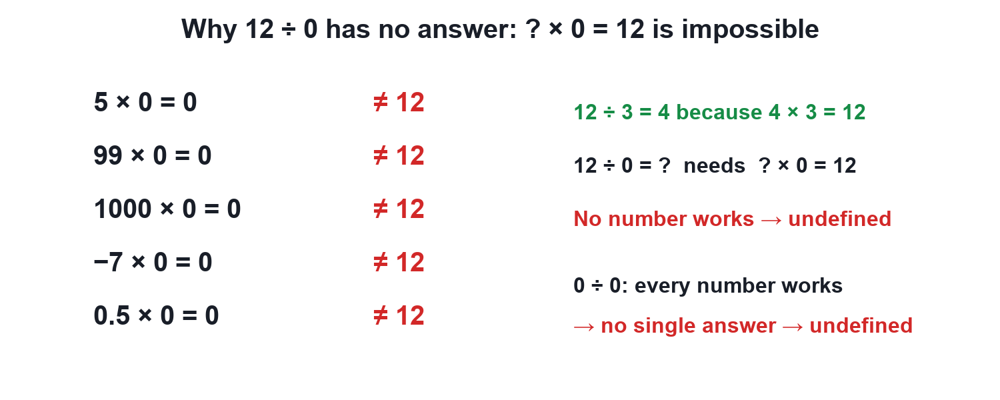
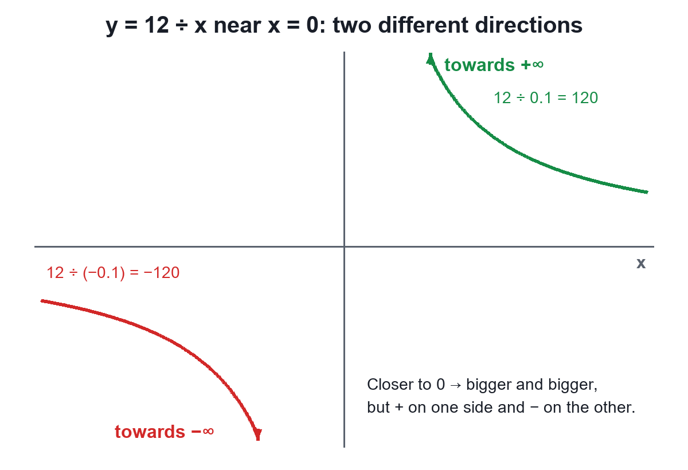

Mathematics
Why Division by Zero Is Undefined
Video not playing? Watch on Instagram · YouTube
A calculator says ERROR for 12 ÷ 0 because no number times 0 gives 12. It is not infinity either.
Download the short notesPDF, 169 KB · solved examples, practice set and answer key That's all the videos in this chapter so far Back to Numbers and infinity
Key points
- Division undoes multiplication: a ÷ b = c means c × b = a.
- a ÷ 0 (a ≠ 0): no c gives c × 0 = a → undefined.
- 0 ÷ 0: every c works → no single answer → undefined.
- Infinity is not a number; near 0, 12/x runs to +∞ on one side and −∞ on the other.
Why there is no answer
12 ÷ 3 = 4 because 4 × 3 = 12. So 12 ÷ 0 = c would need c × 0 = 12, but every number × 0 = 0. No c exists.

Not infinity either

12 ÷ 0.1 = 120, 12 ÷ 0.01 = 1200 (towards +∞); 12 ÷ (−0.01) = −1200 (towards −∞).
What is allowed
| Expression | Value |
|---|---|
| 0 ÷ 5 | 0 |
| 5 × 0 | 0 |
| 5 ÷ 0 | Undefined |
| 0 ÷ 0 | Undefined |
That is why a rational number p/q needs q ≠ 0.
Quick quiz
4 questions. Choose an answer for each, then submit to see your score and the explanations.
More from Numbers and infinity
 Why 0.999… Equals 10.999… with the 9s never stopping is exactly 1, not "a little less". Three short proofs show why.Mathematics
Why 0.999… Equals 10.999… with the 9s never stopping is exactly 1, not "a little less". Three short proofs show why.Mathematics Natural, Whole, Integers and Rational NumbersEach new family of numbers answers a question the old one could not, and every family lives inside the next: N ⊂ W ⊂ Z ⊂ Q.Mathematics
Natural, Whole, Integers and Rational NumbersEach new family of numbers answers a question the old one could not, and every family lives inside the next: N ⊂ W ⊂ Z ⊂ Q.Mathematics